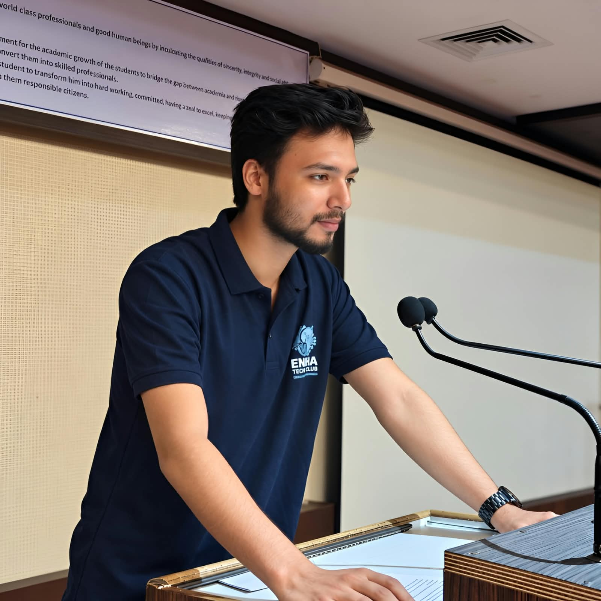

Computer Science
B.Tech CSE student at Dr. A.P.J. Abdul Kalam Technical University · Lucknow
COMPUTER SCIENCE STUDENT & DEVELOPER
Hey, I'm Md Kaif — also known as Ahan Zoif. I enjoy building for the web, solving problems with code, and exploring the technology behind tomorrow.

A LITTLE ABOUT ME
I learn best by creating things, solving problems, and sharing what I discover.
B.Tech CSE student at Dr. A.P.J. Abdul Kalam Technical University · Lucknow
Creating responsive, accessible interfaces with a focus on usability and detail.
Practicing data structures and algorithms using C++ to strengthen my logic.
Exploring tech content, creative tools, and collaborative learning initiatives.
TOOLS OF THE TRADE
The technologies I use and the skills I'm actively improving.
SELECTED WORK
A selection of projects, experiments, and work that reflect my learning journey.
A student portal project focused on making attendance and student workflows easier to manage.
An exploration of workflow automation, connected tools, and practical productivity flows.
View repositoryA habit and progress tracker designed to build consistency across study, daily routines, and personal goals.
Contributed as Student Editor to the IT department magazine, coordinating content and presentation.
View repositoryMore experiments and code on GitHub .
THE JOURNEY SO FAR
Small steps, new challenges, and projects that help me grow.
Began my B.Tech and learned programming fundamentals with C.
Started building web interfaces and strengthened my problem-solving foundations.
Worked on collaborative projects, technical publication, and workflow automation experiments.
Dr. A.P.J. Abdul Kalam Technical University · Lucknow, India · 2024–Present
HAVE A PROJECT IN MIND?
I'm open to connecting, learning with others, and collaborating on interesting ideas.
Get in touch